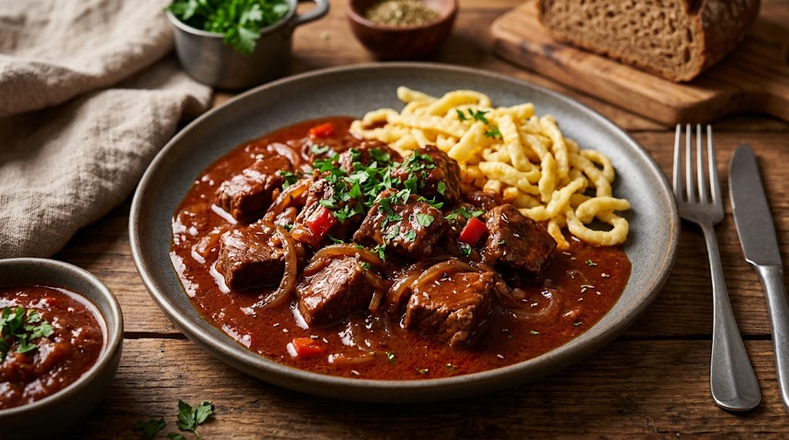

Tages-Tipp: Rindsgulasch Spätzle
Dieses Gericht kombiniert Lebensmittelaktionen der aktuellen Woche zu einer kostengünstigen Mahlzeit.

SmartCook verknüpft aktuelle Angebote österreichischer Supermärkte mit passenden Rezeptideen, um eine preisbewusste Mahlzeitenplanung zu ermöglichen und Lebensmittelverschwendung zu reduzieren.
Dieses Gericht kombiniert Lebensmittelaktionen der aktuellen Woche zu einer kostengünstigen Mahlzeit.
